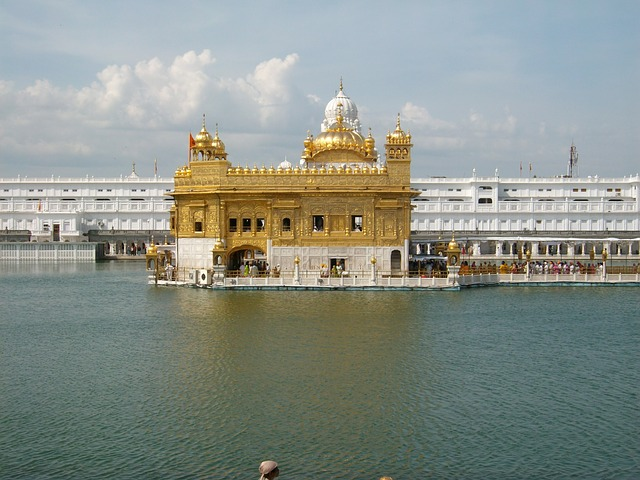

GURPURAB

Definition:
Purab is an anniversary commemorating either birth or death as a holiday festival.
Gurpurab is a holiday commemorating either the birthday or the death of one of the ten gurus of Sikhism. A gurpurab is observed with festivities which involve a worship service:
The festivals held in honor of the Sikh Gurus are called Gurupurabs. They are well spread over the year but there are three important ones. On the full moon of Kartik the birth anniversary of Guru Nanak is celebrated by the devotees with great ardor. Two days earlier a non-stop reading of the Adi Granth is started. At different places religious congregations are held and hymns from the Granth Sahib are chanted. Large processions and are taken out through the towns. At night buildings are illuminated. The birth anniversary of Guru Gobind Singh is also celebrated in a similar manner. The third important Gurupurab is the one associated with the martyrdom of Guru Arjan Dev.
The festivals connected with the lunar days, Ekadashi (eleventh lunar day), Pooranmashi (full moon), and Masya (new moon) occur every rnonth. Similarly, Sankranti, when the sun enters the new Zodiac sign, is celebrated on the first of every month of the Vikrarmi era with great gusto. It is also an occasion to prepare and eat the nicest of foods. In the Punjab, where the Vikrami era is followed, the year begins with Chet (March-April). On the first of this month the arrival of the new year is celebrated by the performance of a ritual of taking the new corn, known as ann nawan karna. Sheafs of new corn are roasted and then the parched grain is eaten. Everyone must have a bath on the new year day, and put on new clothes. Delicacies like kheer and halwa are prepared and eaten.
Gurpurab is a celebration or commemoration based on the lives of one of the sikh gurus They tend to be either birthdays or celebrations of Sikh martydrom
A Sikh festival or special day is called Gurpurb, meaning "Guru's remembrance day". The celebration is generally similar for all Gurpurabs; only the hymns and history of a particular occasion is different. T
A Sikh festival or special day is called Gurpurb, meaning "Guru's remembrance day". The celebration is generally similar for all Gurpurabs; only the hymns and history of a particular occasion is different. The ceremony for Guru Nanak's birthday is described in detail.
The birthday of Guru Nanak, founder of the Sikh religion, usually comes in the month of November, but the date varies from year to year according to the lunar Indian Calendar. The birthday celebrations last three days. Generally two days before the birthday, Akhand Path is performed in the Gurdwaras. One day before the birthday, a procession is organised which is led by the Panj Piaré and the Palki (Palanquin) of Guru Granth Sahib and followed by teams of singers singing hymns, brass bands playing different tunes, 'Gatka' (martial art) teams show their swordsmanship, and processionists singing the chorus. The procession passes through the main roads and streets of the town which are covered with buntings and decorated gates and the leaders inform the people of the message of Guru Nanak. On the anniversary day, the programme begins early in the morning at about 4 or 5 am with the singing of Asa-di-Var (morning hymns) and hymns from the Sikh scriptures followed by Katha (exposition of the scripture) and lectures and recitation of poems in praise of the Guru. The celebrations go on till about 2 pm.
After Ardas and distribution of Karah Parsad, the Langar is served. Some Gurdwaras also hold night prayer sessions. This begins around sunset when Rehras (evening prayer) is recited. This is followed by Kirtan till late in the night. Sometimes a Kavi-darbar (poetic symposium) is also held to enable the poets to pay their tributes to the Guru in their own verses. At about 1:20 am, the actual time of the birth, the congregation starts singing Gurbani. The function ends about 2 am.
The Sikhs who cannot join the celebrations for some reason, or in places where there are no Gurdwaras, hold the ceremony in their own homes by performing Kirtan, Path, Ardas, Karah Parsad and Langar. Guru Gobind Singh, the tenth Guru's birthday generally falls in December or January. The celebrations are similar to those of Guru Nanak's birthday, namely Akhand Path, procession and Kirtan, Katha, and Langar.
The martyrdom anniversary of Guru Arjan, the fifth Guru, falls in May or June, the hottest months in India. He was tortured to death under the orders of Mughal Emperor, Jahangir, at Lahore on 25 May 1606. Celebrations consist of Kirtan, Katha, lectures, Karah Parsad and Langar in the Gurdwara. Because of summer heat, chilled sweetened drink made from milk, sugar, essence and water, called chhabeel is freely distributed in Gurdwaras and in neighbourhoods to everybody irrespective of their religious beliefs.
Guru Tegh Bahadur, the ninth Guru, was arrested under orders of Mughal Emperor, Aurangzeb. As he refused to change his religion and accept Islam, he was beheaded on 11 November 1675 at Chandi Chowk, Delhi. Usually one-day celebrations of his martyrdom are organised in the Gurdwaras.
Three days before his passing away, Guru Gobind Singh conferred on 3 October 1708, the guruship of the Sikhs on Guru Granth Sahib. On this day, a special one-day celebrations are organised with Kirtan, Katha, lectures, Ardas, Karah Parsad and Langar. Sikhs rededicate themselves to follow the teachings of the Gurus contained in the scripture.
{kind=link}